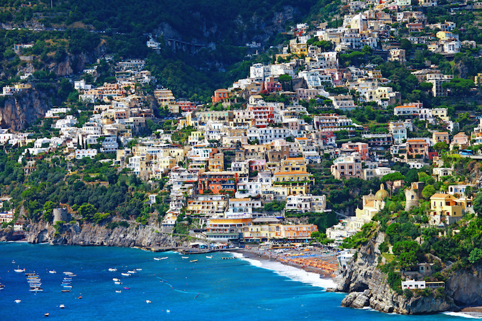

Planning a trip to Turkey? Here’s a quick guide to its beaches, cultural sites, shopping hubs and cruise destinations – precisely all the best places to visit in Turkey. Sometimes all we need is a vacation, away from the humdrum of the city life, the constant buzz of social media and of course, the traffic! But it often gets difficult to choose a destination. If your heart says beach, your mind craves a rich historical site. It’s quite rare that you find a place with almost everything. Turkey is one such rare gem. Key tourist attractions in Turkey cater to people with varied interests, especially those looking out for some enriching adventure. It is adorned with a stunning coastline, quaint villages and a matchless cultural legacy.
1. Kabak Bay

If you want some hippy vibe, check out the tranquil Kabak Bay. To visit the Kabak Valley near Fathiye, hire a taxi to enjoy the jaw-dropping beauty. Or if you’re adventurous at heart, you can always opt for a day hike. It is one of the beautiful unexplored places in Turkey.
2. Butterfly Valley, Oludeniz

Unleash the bohemian in you in the charming Butterfly Valley, one of the best places to visit in Turkey. You can laze around in a hammock, sip your favorite drink and enjoy campfire and music at the Rock Bar. It is one of the famous Turkey tourist attractions. Location: Butterfly ValleyUzunyurt, 48300 Fethiye/Mugla, Turkey
3. Patara

A must among places to see in Turkey is Patara, the longest beach in Turkey. There are a few reasonably priced beach cafés with umbrellas and sunbeds for hire. Also if you’re lucky, you can witness a sunset and moonrise at the same time from the top of a dune. Absolutely enchanting! Location: Gelemis, Antalya Province, Turkey
4. Princes’ Island
The Princes’ Island is among major tourist attractions in Istanbul, Turkey. Best thing here is the silence – horse-drawn carriages and bicycles are available instead of motorized vehicles. Location: Princes’ Island, Turkey
5. Cappadocia
One of the best places to visit in Turkey, Cappadocia is the result of a volcanic eruption. Explore the place with a horse ride, take an air balloon ride, and don’t forget to sip on Turkish tea. It is one of the best cities in Turkey that will leave you in awe of it. Location: Cappadocia, Turkey